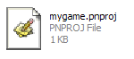
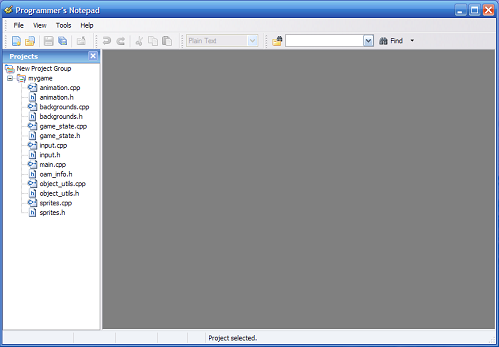
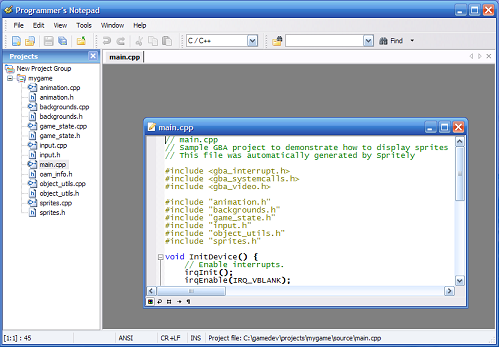
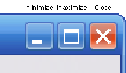
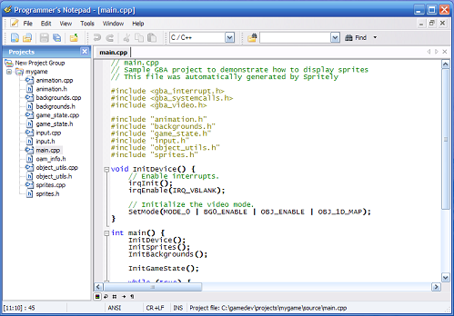
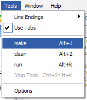
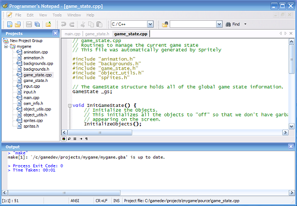
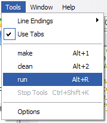
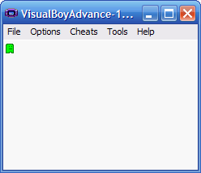

Using Programmer's Notepad
"Programmer's Notepad" is a text editor that is packaged with the devkitPro installer. We will use it to view and edit the source code to our GBA game.
While "Programmer's Notepad" is convenient because it is already installed for as part of the devkitPro installation, you should feel free to use whatever text editor you prefer.
Step 1 : Launch Programmer's Notepad
The easiest way to launch Programmer's Notepad is to find the .pnproj file in your project's directory. This file is automatically generated by Spritely when you "Export" your project.

After double-clicking this file, Programmer's Notepad will load your project:

The project source files are shown in a window on the left side. These are the files that are used to build your GBA project. You'll be editing these files in later tutorials.
If you see extra windows open in Programmer's Notepad, feel free to close them to reduce clutter.
Step 2 : Edit a source file
To open a source file, just double-click on the icon next to the filename.

To make the window so that it fills the entire workspace, press the "Maximize" button in the upper-right corner of the window.

This will allow you to see more of the file at a time (which makes it easier to make changes to the code).

Step 3 : Build/Run from within Programmer's Notepad
One nice feature of "Programmer's Notepad" is that you can build and run your GBA project easily without switching to another application.
To build your project, select "make" from the "Tools" menu.

This will open up an "Output" window at the bottom of the workspace and automatically enter the make command for you.

The output of the make command will be displayed in this output window.
If you see
ROM fixed!
for GBA projects, or
build ... mygame.nds
for NDS projects, or a message that ends with
... is up to date.
at the end of the ouput, then your project was built successfully.
To run your program after it's built, select "run" from the "Tools" menu.

If you've already made the file association (as shown in Running your GBA ROM tutorial), then this will automatically launch VisualBoy Advance with your ROM.

Finished!
That's all.